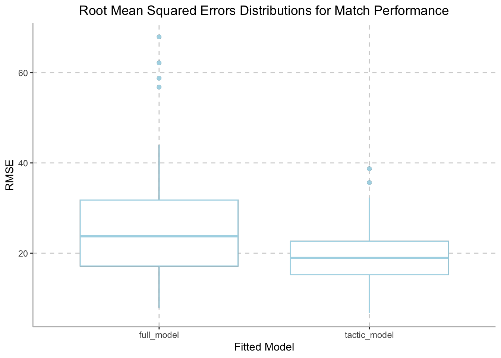

Given previous exploration of the datasets and existing scientific studies on the factors that could potentially affect sport performance, a regression model is fitted to see if any variable has a significant impact on team performance.
A full regression model is fitted with the following components:
Outcome: general_goal_difference represents team
performance, which is goal scored minus goal conceded
Predictor: general_squad_average_age is the average
age of all players of the team
Predictor: ave_age_proportion is the proportion of
players aged 23 to 29 years old in the team
Predictor: europe_player_proportion is the
proportion of players with an European origin in the team
Predictor: attack_posession is the ball possession
rate of the team
Predictor: attack_passes_back is the number of short
passes done during attack
Predictor: general_card_yellow is the number of
yellow cards received by the team over the season
Predictor: total is the total net spending in
transfer market over the past decade
match_df = match_df |>
mutate(ave_age_proportion = ave_age_proportion*100,
europe_player_proportion = europe_player_proportion*100,
total = -total)
model_full = match_df |>
lm(general_goal_difference ~ general_squad_average_age + ave_age_proportion + europe_player_proportion
+ attack_posession + attack_passes_back + general_card_yellow + total, data = _ ) |>
broom::tidy()
knitr::kable(model_full, digits=3)| term | estimate | std.error | statistic | p.value |
|---|---|---|---|---|
| (Intercept) | -144.135 | 178.592 | -0.807 | 0.435 |
| general_squad_average_age | -2.954 | 4.463 | -0.662 | 0.521 |
| ave_age_proportion | 0.204 | 0.389 | 0.525 | 0.609 |
| europe_player_proportion | -0.050 | 0.491 | -0.103 | 0.920 |
| attack_posession | 6.345 | 2.771 | 2.290 | 0.041 |
| attack_passes_back | -0.034 | 0.025 | -1.377 | 0.194 |
| general_card_yellow | -0.363 | 0.483 | -0.752 | 0.467 |
| total | 0.039 | 0.024 | 1.597 | 0.136 |
Looking at the linear model result, attack_posession has
an estimate of 6.345 and a p value of
0.041, indicating that it is a significant factor in
terms of team performance. In fact, there is a positive correlation
between ball possession rate and goal difference. Besides possession
rate, the p value of other variables are all greater than 0.05, which
means that the relationship between those variables and the outcome is
not statistically significant. Nevertheless, we are still able to read
pattern from the result. total has the second smallest p
value of 0.136 and a positive coefficient estimate,
indicating that economic support from the club is indeed positively
associated with club performance.
After evaluating the full model with all the variables of interest, it seems that game tactics have the most significant effect on team performance. We decide that it would be interesting to create another linear regression model focusing only on variables representing tactic statistics and compare it with the full model above.
Outcome: general_goal_difference represents team
performance, which is goal scored minus goal conceded
Predictor: attack_posession is the ball possession
rate of the team
Predictor: attack_passes_back is the number of short
passes done during attack
tactic_model = match_df |>
lm(general_goal_difference ~ attack_posession + attack_passes_back, data = _)|>
broom::tidy()
knitr::kable(tactic_model, digits=3)| term | estimate | std.error | statistic | p.value |
|---|---|---|---|---|
| (Intercept) | -285.739 | 68.497 | -4.172 | 0.001 |
| attack_posession | 7.237 | 2.511 | 2.882 | 0.010 |
| attack_passes_back | -0.029 | 0.024 | -1.244 | 0.230 |
Looking at the regression model results,
attack_possession has an even smaller p value of
0.01, indicating that that statistical correlation
between it and the outcome is stronger in our tactic model. The p value
of attack_passes_back suggests that it is still not
statistically significant, and the coefficient estimate indicates a very
weak association.
With one general full linear model and one tactic specific linear
model, we are interested in assessing the performance of these two
predictive models and to ensure that over-fitting is not an issue. Thus,
we performed cross validation of our full_model and
tactic_model and looked at the distribution of
rmse to visualize model prediction accuracy.
cv_df =
crossv_mc(match_df, 100) |>
mutate(
train = map(train, as_tibble),
test = map(test, as_tibble))
cv_df =
cv_df |>
mutate(
full_mod = map(train, \(df) lm(general_goal_difference ~ general_squad_average_age + ave_age_proportion +
europe_player_proportion + attack_posession + attack_passes_back +
general_card_yellow + total, data = df)),
tactic_mod = map(train, \(df) lm(general_goal_difference ~ attack_posession + attack_passes_back, data = df)))|>
mutate(
rmse_full_model = map2_dbl(full_mod, test, \(mod, df) rmse(model = mod, data = df)),
rmse_tactic_model = map2_dbl(tactic_mod, test, \(mod, df) rmse(model = mod, data = df)))
cv_df |>
select(starts_with("rmse")) |>
pivot_longer(
everything(),
names_to = "model",
values_to = "rmse",
names_prefix = "rmse_") |>
mutate(model = fct_inorder(model)) |>
ggplot(aes(x = model, y = rmse)) + geom_boxplot() +
geom_boxplot(color = c("#ADD8E6")) +
labs(
title = "Root Mean Squared Errors Distributions for Match Performance",
x = "Fitted Model",
y = "RMSE") +
theme(axis.line = element_line(color = "grey"),
panel.background = element_blank(),
legend.position = "none",
panel.grid.major = element_line(color = "light grey", linetype = "dashed"),
plot.title = element_text(hjust = 0.5))
Based on the boxplot shown above, we can observe that
rmse is relatively lower in tactic_model and
there is less variance in the distribution of rmse. In
addition, outlier is more commonly when making prediction using
full_model.